Widgets
In MapStore it is possible to create widgets from the layers added to the map. Widgets are components such as charts, texts, tables and counters, useful to describe and visualize qualitatively and quantitatively layers data and provide the user the opportunity to analyze information more effectively.
Note
Some widgets (in maps or in dashboards) need some WPS back-end support to work:
-
The
map widgets(dashboards) needs the WPS processgs:Boundsto zoom to filtered data, if connected to a table. -
For aggregate operations,
chartandcounterwidgets need the WPS processgs:Aggregateavailable in GeoServer to work.
Add a Widget
Once at least one layer is present in the map (see Catalog section for more information about adding layers), it is possible to create a widget by selecting that layer in the TOC and by clicking on the button from the Layer Toolbar or from the Attribute Table. Performing these operations the Widget panel appears:
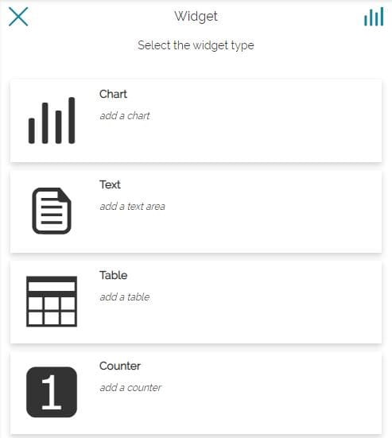
From here the user can choose between four different types of widget:
-
Chart
-
Text
-
Table
-
Counter
Chart
Charts widget allow multi-selection of layer to create a widget that allows user to configure chart options for each layer. And switch between multiple charts in a widget.
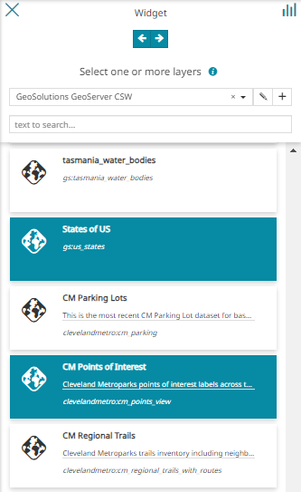
Selecting a Layer or Layers, the following Chart options is presented to user:
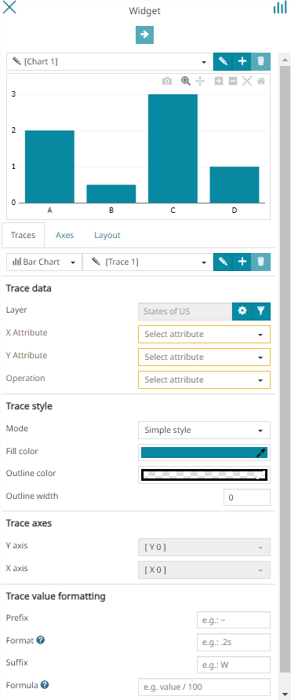
From the top toolbar of this panel the user is allowed to:
-
Going back to the widget type section.
-
Connect or disconnect the widget to the map. When a widget is connected to the map, the widget is automatically spatially filtered with the map viewport. When a widget is not linked, it displays the entire dataset of that layer regardless of the map viewport.
-
Move forward to the next step when the settings are complete. The button prevents the user from proceeding to the next step of the wizard if the setting of some fields in the chart form is invalid
From the chart configuration page, the user can first perform the following operation:
-
Edit the Chart Title through the button
-
Add new chart to the current widget through the button
-
Delete the selected chart and its configuration from the widget through the
 button
button
Traces
For each chart MapStore allows to define multiple Traces. With a Trace it is possible to define an additional chart representation (for the same layer by default) to be displayed in the same chart view: all traces are displayed together in the same chart. Just below the chart's preview, there is the Traces tab, where the user can:
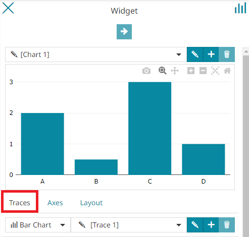
-
Choose between Bar Chart, Pie Chart or Line Chart. By default, the Bar Chart is selected.
-
Edit the current Trace Title through the button
-
Add new trace through the button
-
Delete the current trace through the
button
Once the chart type is chosen, it is possible to set up the trace with the following options:
- Trace data
- Trace style
- Trace axes
- Trace value formatting
Trace Data
The Trace data is displayed as follows:
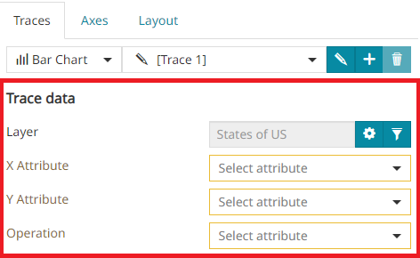
In this section the user can:
-
Change the trace layer through the button (by default the layer is automatically the same of the first trace defined)
-
Open the Query Panel to configure a Layer Filter for the selected layer through the
 button.
button. -
Define the X Attribute of the chart (or Group by for Pie Charts) choosing between layer fields
-
Define the Y Attribute of the chart (or Use for Pie Charts) choosing between layer fields
-
Define the aggregate Operation to perform for the selected attribute choosing between
No Operation,COUNT,SUM,AVG,STDDEV,MINandMAX
Note
The No operation option is used when the aggregation method is not needed for the chart. If No Operation is selected, no aggregation will be carried out for the chart and the WFS service will be used to generate the chart without using the WPS process gs:Aggregate in GeoServer.
Trace Style
The Trace style is displayed as follows:
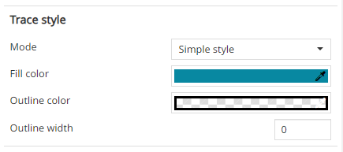
The user can customize the style with the following options choosing between Simple style or Classification style
With the Simple style, the editor is allowed to customize the Fill color, the Outline color and the Outline width
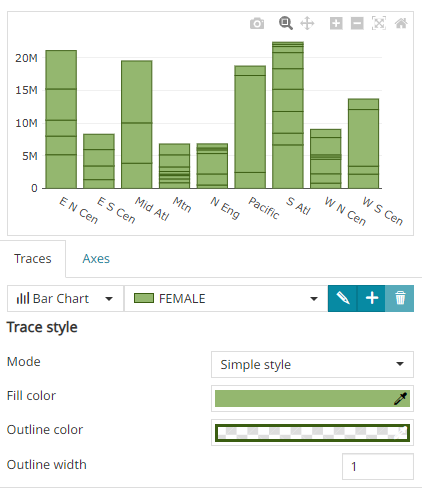
Classification style
For Bar Charts and Pie Charts, MapStore provides the possibility to customize the colors of the charts bars and slices. It is possible to classify the style based on the attributes of the layer. In this case it is possible to select the Attribute to use for the classification along with the classification Method (Quantile, Equal interval, Natural breaks and Unique interval) and select whether to Sort the classification by Attribute X or Attribute Y. Choose a Color ramp, the number of classification Intervals and the order (with Reverse order) of the classification intervals colors. Finally customize the Outline color and the Outline width.
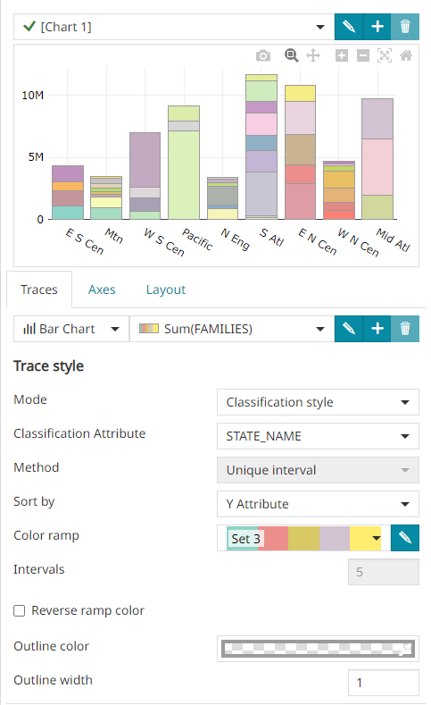
From the Color Ramp option, the user can select the Custom colors option and open the Custom Colors Settings modal through the button. Inside this modal, the user is allowed to:
- Change the default Color of bars or slices (depending on the chart type) through the Color Picker. This color will be applied for all values for which a Class Color has not been configured.
- Enter a Default Class Label to be used in the legend for all values that will not be specifically classified in the following list.
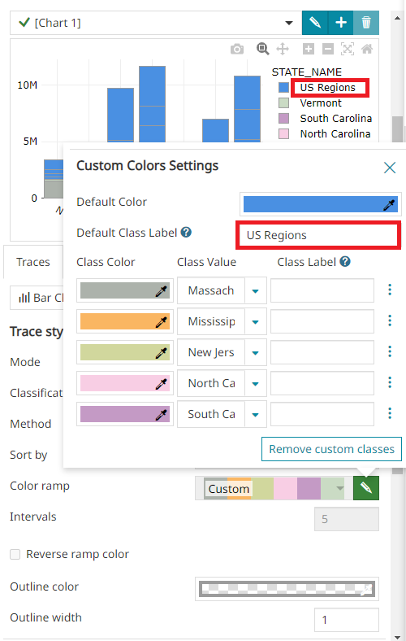
Note
For both Default Class Label and Class Label '${legendValue}' can be used as a placeholder for the Y Attribute (that can be further customized through the usual Advanced Option).
- Classify Classification Attribute values to assign a specific color in the chart along with its Class Label to use for the chart legend. Only values of type String or Number are currently supported.
Classification Attribute of type String
When the values of a classification attribute are of type String, the user can:
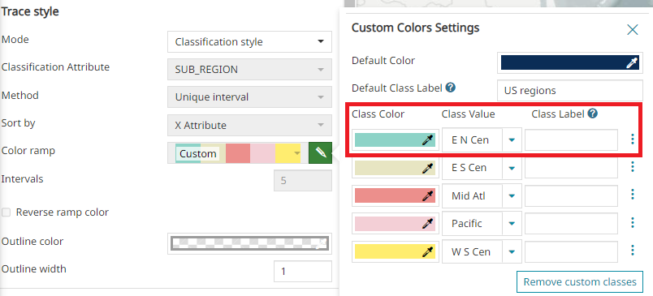
-
Change the Class Color through the Color Picker.
-
Change the value of the Classification attribute through the dropdown menu Class Value
-
Enter a Class Label to be used in the legend for the value entered in the Class Value
Note
For Class Label, '${legendValue}' can be used as a placeholder for the Y Attribute (that can be further customized through the usual Advanced Option).
Through the button the user can add new values before through the 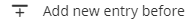 button or after through 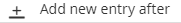 button.
Classification Attribute of type Number
When the values of a classification attribute are numbers, the user can configure a color ramp and so:
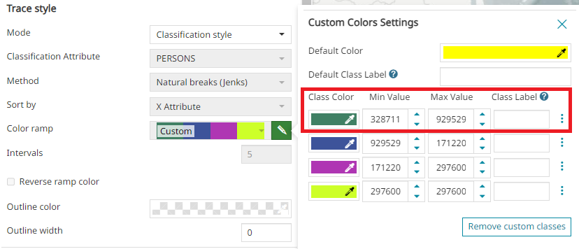
-
Change the Class Color through the Color Picker
-
Change the Min value of the Classification attribute
-
Change the Max value of the Classification attribute
-
Enter a Class Label to be used in the legend for the value entered in the Class Value
Note
For Class Label two placeholders can be used in this case: ${minValue}, can be used as a placeholder for Min Value and ${maxValue}, can be used as a placeholder for Max Value; the ${legendValue} can be used in the same way as specified above.
Trace axes
If Axes have been customized in the Axes tab, the user can choose which custom axes to use for the current trace.
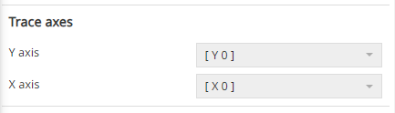
Trace Value Formatting
The user can customize trace value tooltips by adding a Prefix (e.g. ~), a custom Format (e.g. 0%: rounded percentage, '12%' or more) or a Suffix (e.g. Km). It is also possible to configure a Formula to transform tick values as needed (e.g. value + 2 or value / 100 or more)
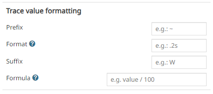
Note
More information about the syntax options allowed for Format are available here and the allowed expression to be used as Formula are available here in the online documentation.
An example of a custom trace value tooltip can be the following:
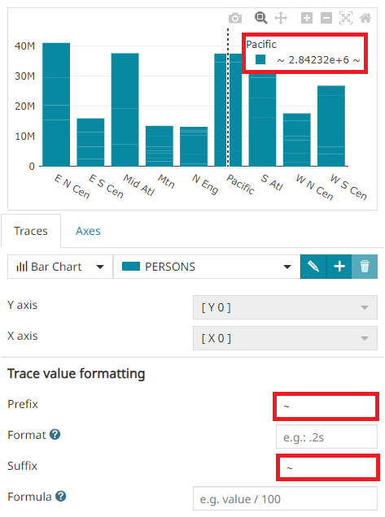
Trace legend options
For the Pie Charts, the Trace legend options is available and it is displayed as follows:
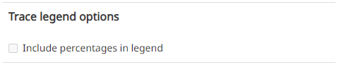
The user can:
- Show/Hide the percentages in legend with the Include percentages in legend control. An example with the percentages in legend can be the following:
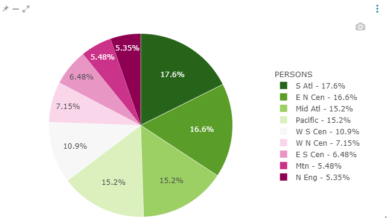
Axes
MapStore allows to customize the Y axis and the X axis for the Bar Charts and the Line Charts through the Axes tab.
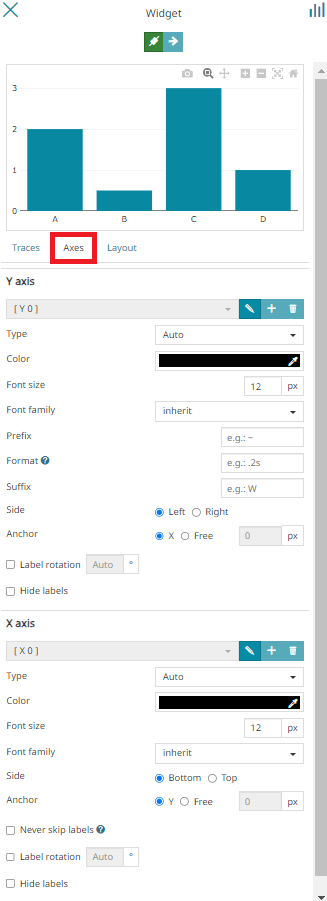
Through this section, for each axis, the user is allowed to:
-
Edit the current Axis Title through the button
-
If there is more than one Trace, Add new axis through the button
-
If there is more than one Trace, Delete the current axis through the
button -
Choose the Type (between
Auto,Linear,Category,LogorDate): the axis type is auto-detected by looking at the data (Auto option is automatically managed and selected by the tool and it is usually good as default setting). -
Change the Color through the color picker
-
Change the Font size
-
Select the Font family (
Inherit,Arial,Georgia,Impact,Tahoma,Times New RomanorVerdana) -
Customize Y axis label by adding a Prefix (e.g.
~), a custom Format (e.g.0%: rounded percentage, '12%'or more) or a Suffix (e.g.Km).
Note
More information about the syntax options allowed for Format are available here in the online documentation.
-
Choose the Side of the chart on which to display the axis labels (between
LeftorRight) -
Choose how to Anchor the axis labels (between
AxisorFree) -
Tune the rendering of tick labels by enabling the Never skip labels (it forces all ticks available in the chart to be rendered instead of simplifying the provided set based on chart size)
Warning
The Never skip label option is available only for the X axis and the tick labels available by enabling the option cannot be more than 200 in order to provide a clear chart and for performance reasons.
-
Enable Label rotation to better adapt axis tick labels on the charts depending on the needs.
-
Choose to completely hide labels through the Hide labels control.
Layout
Through the Layout tab, the user can also customize the Layout of the chart and the default Font for all the labels present in the chart.
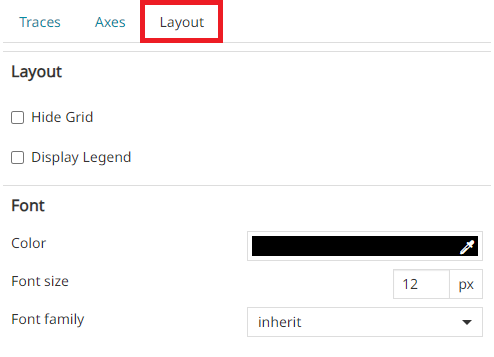
Here the user can:
-
Show/Hide the chart's grid in background with the Hide Grid control (only for the Bar Charts and the Line Charts)
-
Enable the chart's legend by activating Display Legend
-
Choose the Color for all chart texts through the color picker (only for the Bar Charts and the Line Charts)
-
Change the Font size for all chart texts
-
Select the Font family (
Inherit,Arial,Georgia,Impact,Tahoma,Times New RomanorVerdana) for all chart texts
If the Classification attribute is added to the Bar Chart, in the Trace Style, the Bar Chart Type option is displayed.
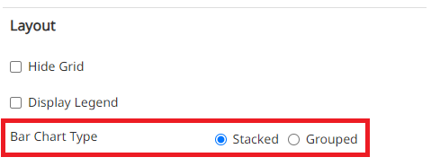
The user can customize the bars by choosing between:
- Grouped. An example can be the following:
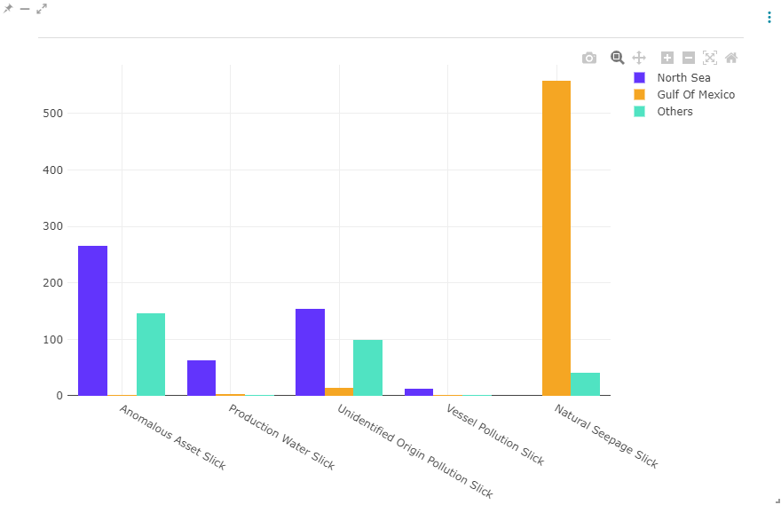
- Stacked. An example can be the following:
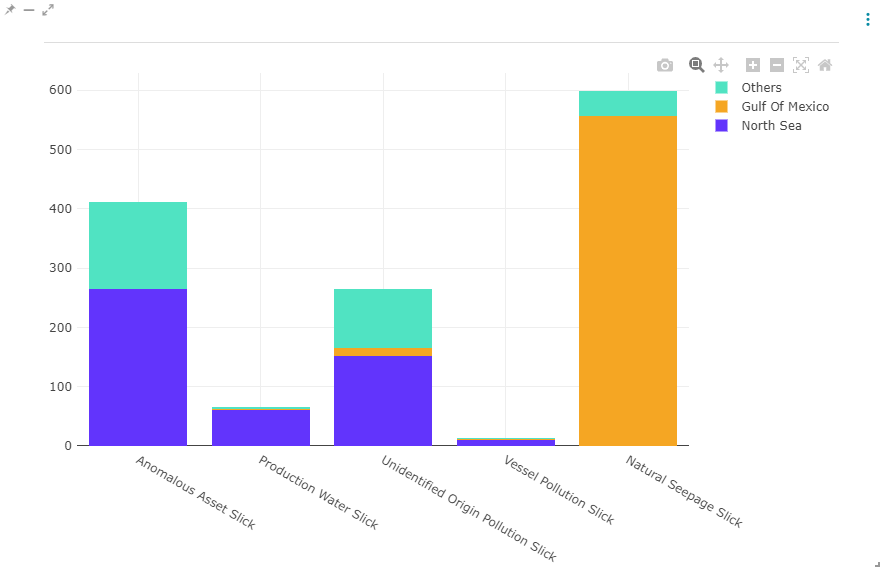
Note
By default, the bar chart type is Stacked
Configure Chart Info
Once the settings are done, the next step of the chart widget creation/configuration is displayed as follows:
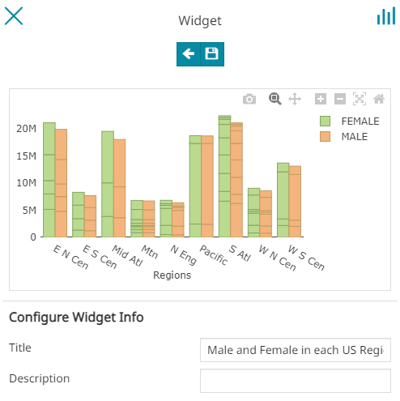
The user can:
-
Go back to the chart option with the button
-
Add the widget to the map with the button
Just below the chart's preview, the user is allowed to set:
-
The widget Title
-
The widget Description
Note
None of these fields are mandatory, it is possible to save/add the widget to the map without filling them.
An example of chart widget could be:
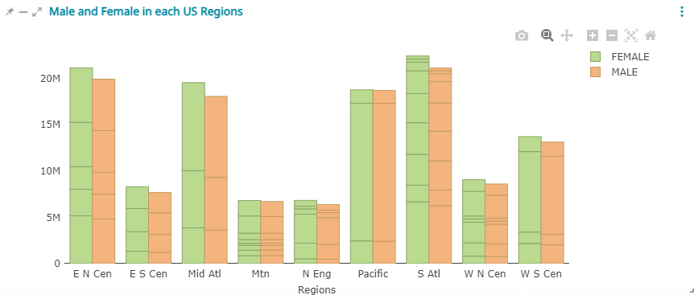
The Chart toolbar, displayed in the right corner of the chart allows the user to:
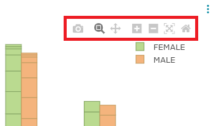
-
Download the chart as a
pngthrough the button. -
Zoom the chart through the button.
-
Pan the chart through the button.
-
Zoom in the chart through the button.
-
Zoom out the chart through the button.
-
Autoscale to autoscale the axes to fit the plotted data automatically through the button.
-
Reset axes to return the chart to its initial state through the button.
-
Toggle Spike Lines to show dashed lines for X and Y values by hovering the mouse over the chart. This is useful to better see domain values on both axis in case of complex charts. It is possible to activate that option through the button.
Text
Creating a new text widget the following window opens:
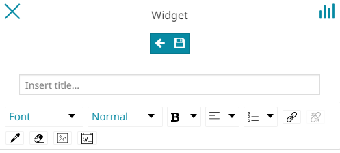
Through the toolbar it is possible to:
-
Go back to the widget type selection with the button
-
Add the widget to the map with the button
Here the user can:
-
Write the title of the widget
-
Write the text of the widget
-
Format the text through the Text Editor Toolbar
Note
From the Text Editor Toolbar the user can also add an URL Image through the 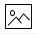 button and add an Embedded Link through the 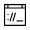 button.
Note
None of these options are mandatory, you can add the widget to the map without filling in these fields.
An example of text widget could be:
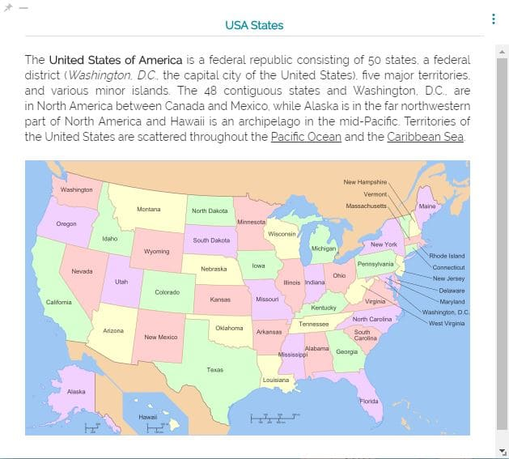
Table
Adding a table widget to the map, a panel like the following opens:
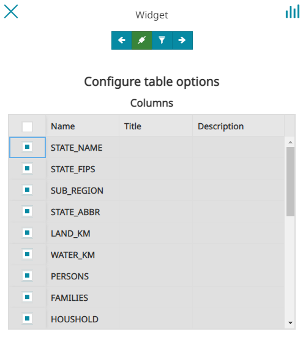
From the top toolbar of this panel the user is allowed to:
-
Going back to the widget type section.
-
Connect or disconnect the widget to the map. When a widget is connected to the map, the widget is automatically spatially filtered with the map viewport. When a widget is not linked, it displays the entire dataset of that layer regardless of the map viewport.
-
Open the Query Panel to configure a Layer Filter for the selected layer through the
button. -
Move forward to the next step when the settings are complete. The button prevents the user from proceeding to the next step of the wizard if the setting of some fields in the chart form is invalid
In the Table Widget the user can:
- Enable/Disable the layer fields that will be displayed in the widget as columns.
Warning
At least one field must be selected in order to move to the next configuration step.
- Enter a Title for each column to be displayed as the table header in place of the Name of the layer field
- Enter a Description for each field to be displayed as a tooltip, visible moving the mouse on the column header.
Once the desired fields are selected, a click on the button opens the following panel:
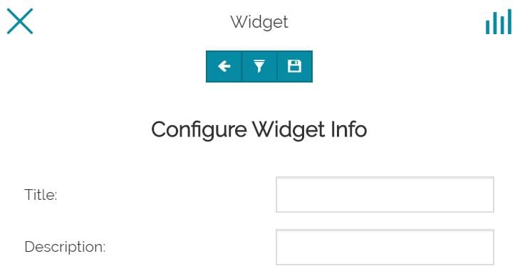
In this last step of the widget creation, the toolbar and the information to be inserted are similar to the ones in Chart section.
An example of table widget could be:
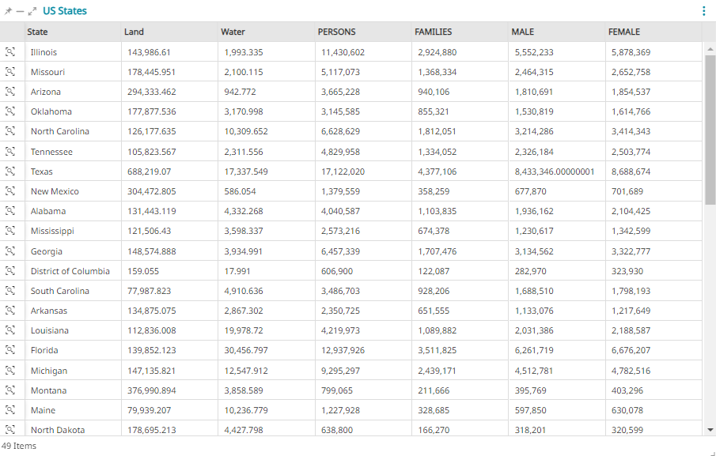
Note
If the Table is connected to a map or if maps are connected to a Table, the user can Zoom to feature through the 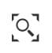 button available on each record.
Counter
Selecting the counter option, the following window opens:
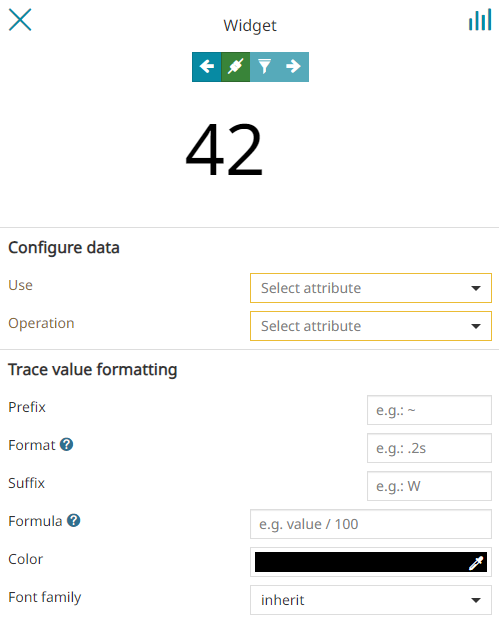
The top toolbar of this panel is similar to the one present in Table section.
Here the user is allowed to:
-
Select the attribute to Use
-
Select the Operation to perform
From the Trace value formatting section, the user is allowed to:
-
Customize the labels by adding a Prefix (e.g.
~), a custom Format (e.g.0%: rounded percentage, '12%'or more) or a Suffix (e.g.Km). -
Configure a Formula to transform tick values as needed (e.g.
value + 2orvalue / 100or more).
Note
More information about the syntax options allowed for Format are available here and the allowed expression to be used as Formula are available here in the online documentation.
-
Choose the Color of the Counter text using the color picker
-
Select the Font family (
Inherit,Arial,Georgia,Impact,Tahoma,Times New RomanorVerdana) of the Counter text
Warning
In order to move forward to the next step, only the Use and the Operation are considered as mandatory fields.
Once the button is clicked, the panel of the last step appears:
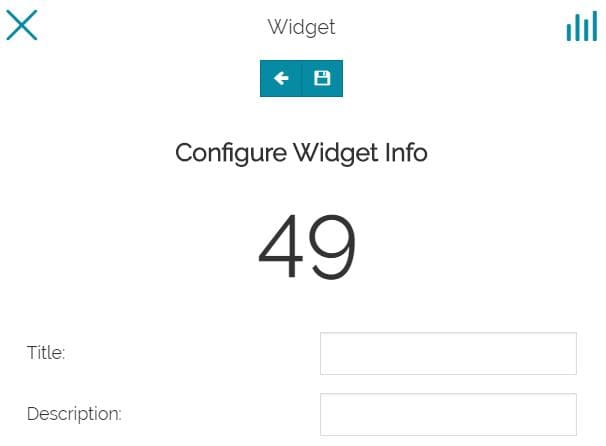
Also in this case the toolbar and the information to be inserted are similar to the ones in Chart section, with the only exception that the Filtering button is missing.
An example of counter widget could be:
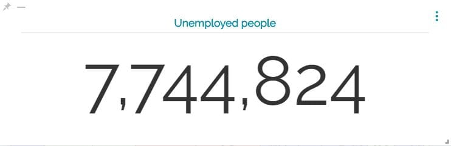
Manage existing widgets
Once widgets have been created, they will be placed on the bottom right of the map viewer and the Widgets Tray appears:
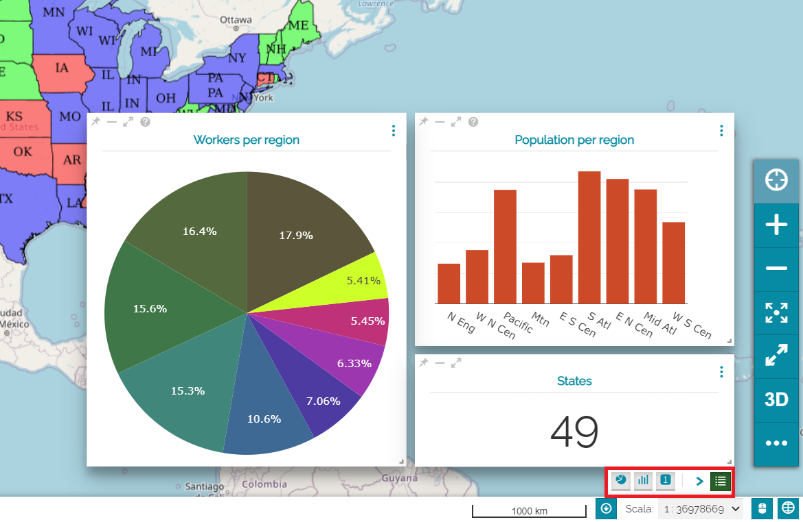
Through the buttons available on each widget the user can perform the following operations:
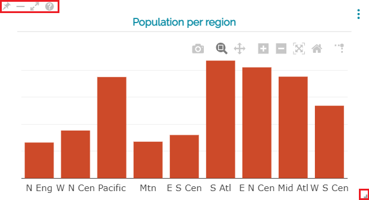
- Drag and drop the widget to move it within the map area of the viewer and resize it through the button (also available for widgets present in a dashboard)
-
Pin the position and the dimension of the widget through the button
-
Collapse the widget through the button and expand it again by clicking the related button in the Widgets Tray
Note
The Widgets Tray allows the user to expand/collapse each single widget individually or all of them at once by using the button.
Warning
When both Timeline and widgets are present in a map, the Timeline button appears in the Widgets Tray allowing the user to expand and collapse it (widgets and Timeline can't anyhow be expanded at the same time).
- Make the widget Full screen through the button (also available for widgets present in a dashboard)
- Access to the Title and Description info through the button, if this information has been provided during the widget configuration/creation
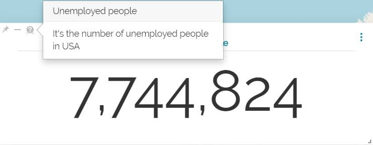
Access widgets menu
Once a widget is added to the map, it is possible to access its Menu through the button. For Text, Table and Counter widgets, the following menu appears:
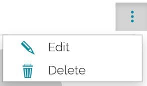
From here the user can:
-
Edit the widget
-
Delete the widget
Only for Charts, the menu is like the following:
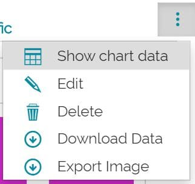
In particular, the user can also:
-
Show chart data in tabular representation
-
Download data in .csv format
-
Export Image in .jpg format